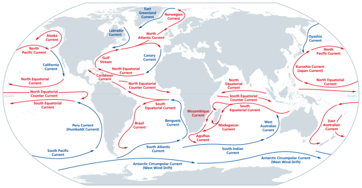
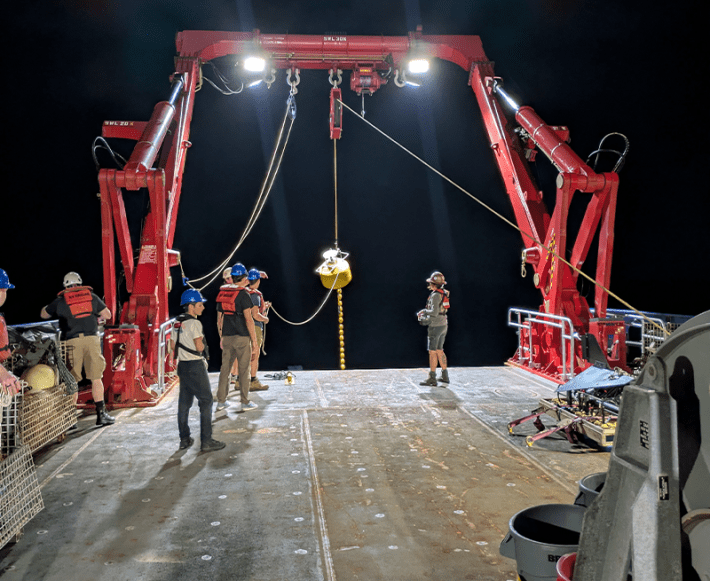
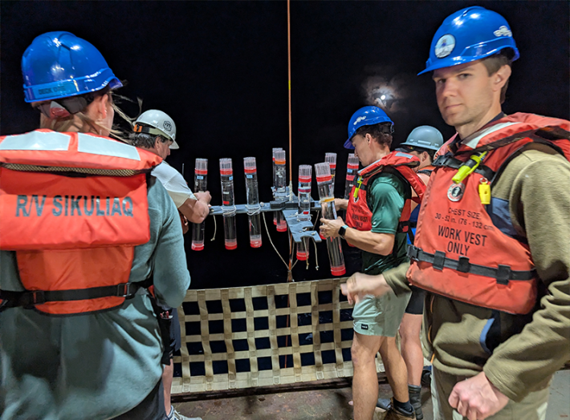

A desert is never barren. Life can course through even the most inhospitable landscapes—arid wilderness, Antarctic ice fields, or mid-ocean depths—leaving traces of its presence among grains of sand, ice crystals, and water molecules.
University of Montana professor Matt Church, a marine scientist who studies microbial ecology and nitrogen and carbon cycling, wants to explore how carbon moves through two of the world’s five ocean gyres. Swirling across vast distances in the North Pacific, South Pacific, North Atlantic, South Atlantic, and Indian oceans, these are enormous ecosystems defined by massive, circular ocean currents and often compared to terrestrial deserts.
These systems may contain reams of chemical information, especially about how carbon, a building block of life on Earth, flows through our seas and into the depths.
As part of a multimillion-dollar, five-year project funded by Schmidt Sciences last year, Church and a team of 24 people, including nine investigators and various research, lab, and field technicians, are heading to two subtropical gyres—the North Pacific (between the United States and Russia) and the South Atlantic (between South America and Africa) to explore the biology and chemistry of these underexplored areas.
A single drop of seawater can contain a million bacterial cells.
“People think of deserts as barren, relatively devoid of life, kind of harsh ecosystems,” says Angelicque White, a biological oceanographer at the University of Hawaii at Manoa and co-lead investigator on the project. “The subtropical gyres are remote. They are generally at latitudes where there’s low seasonality, so you have something akin to an endless summer,” she adds. “But [like deserts], the ocean gyres actually do have quite a diversity of life that has adapted to those ecosystems.”
A single drop of seawater can contain a million bacterial cells, and that’s precisely what White specializes in finding and studying. On the other end of the biological size spectrum, these areas of the ocean are also seasonal breeding grounds for whales and other macrofauna.
The $9.5 million project is dubbed the Subtropical Underwater Biogeochemistry and Subsurface Export Alliance (SUBSEA) and is one of five international projects underwritten by Schmidt Sciences that form the Ocean Biogeochemistry Virtual Institute (OBVI) network. Projects under the OBVI umbrella will share information and fill in gaps in research on understanding marine systems, and findings from them will be made publicly available.
“[These projects] collectively aim to advance our understanding of ocean carbon cycling and also the role and response of marine ecosystems to that carbon cycling,” says Lexa Skrivanek, program scientist and lead manager for the OBVI program at Schmidt Sciences. “[The projects’ goals are] to get a better sense for the oceans’ role in stabilizing Earth’s climate and then how it may evolve.”
The SUBSEA team wants to understand how gyre ecosystems pull carbon from the atmosphere and move it into the deep sea, a process known as carbon sequestration.
The world’s oceans, which cover approximately 70 percent of the planet, soak up and store about a quarter of Earth’s carbon dioxide. Human activities since industrialization in the last couple centuries have increased CO2 emissions to unprecedented levels. All of this excess CO2 in the atmosphere serves as a blanket that encircles the Earth, causing the planet to retain more heat, raising temperature on land and in the sea.
And as our planet’s climate continues to change and temperatures rise, the oceans continually absorb that excess carbon. Somewhat like an antacid pill dropped in a glass of water, CO2 dissolves into the seas and reacts with water molecules to produce carbonic acid. This acid lowers the ocean’s pH, raising its acidity.

A WORLD ASWIRL:Gigantic circular currents, called gyres, span the planet’s oceans. Measuring how essential elements move through these massive swirls of seawater could revolutionize our understanding of Earth’s dynamic cycles and systems. Credit: Peter Hermes Furian / Shutterstock.
But CO2 is also taken up by microscopic plant cells, called phytoplankton, that use the compound to conduct photosynthesis, transforming that carbon into biomass, with oxygen as a byproduct. One of the goals of the SUBSEA team is to explore carbon flux through the bottom of the photic zone—the depth at which enough sunlight reaches for organisms to function—where phytoplankton manage to harvest enough light to power their photosynthesis. “Our proposal was really to try and better understand productivity in that lower portion of the water of the photic zone,” Church says. This deepest layer of the photic zone sits about 300 to 650 feet beneath the surface, making it less studied than shallower regions of the water column that can be tracked by remote sensing tools, such as satellites.
“Still, shallow water relative to the full ocean depth, but in the portion of the upper ocean where light has become low,” he adds. “There’s still productivity and phytoplankton, and that portion of the water column we don’t observe well with satellites.”
Church says that he and his team plan on using recent advances in satellite technology to probe deeper into the photic zone than ever before with the goal of capturing the dynamics of the organisms that make their homes there and react to Earth’s changing climate. “The oceans are warming, so that’s going to change the metabolism of organisms and things that I view as the direct impacts of a warmer ocean,” he says. “But there’s all of these sorts of indirect or non-linear processes that I think we have just barely begun to scratch the surface of thinking about that are potentially super important.”
Most of the nutrients in the ocean move through ocean waters vertically. As oceans warm, the density profile of seawater changes and this vertical exchange becomes more stratified and layers are less apt to mix, like a glass filled with vinegar, water, and oil. “What that means is that the input of nutrients from depth becomes more restricted in these ocean gyres,” Church says. Even though abundant CO2 is available to plankton photosynthesizing in the photic zone, their growth is restricted by the dearth of nutrients supplied to these near-surface layers via upward transport from deeper water.
The world’s oceans soak up and store about a quarter of Earth’s carbon dioxide.
And this means that the carbon sequestration conveyer belt—with carbon being pulled from the atmosphere and stashed in the deepest depths of the ocean—breaks down. “Those systems, mostly because they’re so big, are super important in carbon dioxide uptake by the ocean and its ultimate export to the deep ocean,” Church notes. “As you limit nutrient availability because of that stratification, you’re actually potentially limiting the carbon sink that the oceans are responsible for, because the biology becomes limited by nutrient input.”
More carbon, more heat, more separation, more carbon—and the cycle continues.
The SUBSEA project evolved out of a program called Hawaiian Ocean Time Series (HOTS), which measures ocean biogeochemical processes over time and which White leads. The HOTS program began in the late 1980s and has measured seasonal cycles of biology, chemistry, and physics from Station Aloha located north of O’ahu Island. Many researchers consider the ocean ecosystem at Station Aloha “always blue, always warm, always stratified,” White says. “By studying the system carefully for decades, we’re now able to understand the seasonality of surface processes, how that interacts with the deeper layers of the ocean.”

SCIENCE IN A GYRE:Members of the SUBSEA team deploying a Wirewalker at the Station ALOHA sampling in the North Pacific Subtropical Gyre. This instrument has sensors that measure key biogeochemical and physical properties of the upper ocean as it moves vertically through the water. Credit: SUBSEA investigator Nick Hawco.
She focuses on nitrogen cycling, using optical tools, such as underwater vision profilers, video plankton recorders, and an imaging flowcytobot, which captures video footage of organisms for identification, quantification, and to measure their constituent chemistry. For the SUBSEA program, White says she’ll get to build on her “very deep love of plankton imagery” using all of these technologies.
She’ll take millions of images of plankton—at scales ranging from sub-microscopic to sizes that can be seen by the naked eye. White will then use machine learning tools to classify organisms, such as diatoms with their silica shells, cyanobacteria, or calcifying phytoplankton called coccolithophores. Then undergraduate and graduate students will help the researchers validate the AI model’s identifications. “Now, with the support from Schmidt Sciences, we have an opportunity to go out and test these models [with the SUBSEA program],” she says. “And in one of the most under-explored regions of our oceans.”
The SUBSEA research team hopes to map out the complex routes that vital elements take from the atmosphere to surface waters to ocean depths and back, traveling through food webs as they traverse vast vertical distances over impressive timescales.
Think of the ocean as a continuum, says Bob Hall, a stream ecologist with an office next to Church’s at the University of Montana who will be on the SUBSEA cruise, which is supported by the Schmidt Ocean Institute, next year. “If you were to put a water molecule 1,000 meters down, it’s going to be a long time before that water molecule ever mixes toward the surface … before that ventilates with the atmosphere,” he notes.
The SUBSEA team aims to get an unprecedented handle on the parameters of global nutrient cycles, which could eventually lead to the ability to predict future trends in several biological processes, such as oxygen production, productivity, and carbon sequestration, as the climate continues to change, Hall adds.
As the ocean stores (and cycles) nearly 50 times more carbon than does the atmosphere, it acts as a biological pump we don’t fully understand. Though oceanographers have long studied large- and small-scale marine processes, previous research has not paid much attention to the subsurface layer that the SUBSEA team wants to model, says chemical oceanographer Weiyi Tang of the University of South Florida.

IT’S A TRAP (ARRAY):Sediment trap arrays like this one, being sent into the North Pacific Subtropical Gyre from the SUBSEA team’s research vessel, collect sinking particles that will be analyzed to determine how elements like carbon, nitrogen, and phosphorus travel from upper ocean to the interior waters of the ocean. Credit: SUBSEA post-doc Alexis Floback.
“I was really amazed by the amount of work they proposed to do,” he says, noting also the project’s international scope and its cutting-edge technology. “That can potentially stimulate the development of technology in the future—how humans can potentially better observe the ocean, particularly its changes.”
The project’s implications could affect current and developing industries that depend on predicting the behavior of Earth’s oceans in the face of mounting uncertainty. Tang points to commercial fisheries, aquaculture, and the rapidly growing seaweed farming business. The ocean supports a global economy, and contains the foundation for supporting life on Earth, he notes.
“But looking to the future, the [SUBSEA project] may open new industries or new revenue by exploring the oceans’ ecosystem services,” he says.
Already a year into their five-year plan, the SUBSEA team is hard at work building on their current research and preparing for their first voyage next year. It’s a massive undertaking, considering the onboard technology alone. The tools the researchers will use to complete their ambitious mission include underwater autonomous crafts, profiling floats, wirewalkers—which contain oxygen sensors, fluorometers for measuring how light travels through water and organisms, and can quantify temperature and salinity—and sediment trap arrays, widely used by oceanographers to measure particle flux, which will drift from their ship on a tether. The researchers will also depend on eyes in the sky, tapping into a NASA-launched satellite that’s part of the Plankton, Aerosol, Cloud, ocean Ecosystem (PACE) mission that launched in February 2024 and helps record satellite observations globally of ocean biology, clouds, and tiny atmospheric particle aerosols.
In addition to the tools needed to complete their mission, White, Hall, and Church will be accompanied on the cruise by researchers hailing from institutions in Argentina and South Africa. “These international partnerships are greater than the sum of our parts,” White says of these cross-border collaborations.
The SUBSEA team will set off on the first of two sea voyages in March 2026 for a 35-day field cruise on a research vessel called the Falkor (too). Church says he hopes the scientists can visit five different locations in the subtropical North Pacific and South Atlantic gyres for about five days each. Right now, though, he’s busy figuring out how to ship a 40-foot container through Brazil to their departure port in Rio de Janeiro.
Despite the logistical challenges, the team is eager to launch the mission and start collecting data. “I feel honored in many ways that [Schmidt Sciences] selected our project,” Church says.
In four years, the SUBSEA project could help construct a better understanding of the intricate chemical cycles suffusing the ocean’s many layers, and how one of the most important elements of life on Earth flows through them. 
Lead image: Osman Temizel / Shutterstock